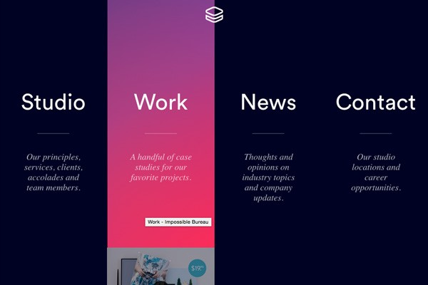
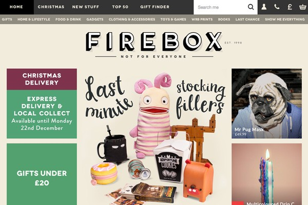
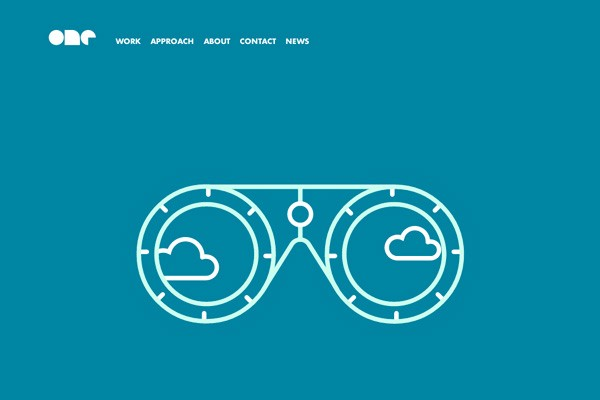
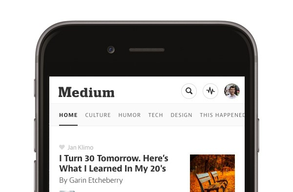

Web设计是一个日新月异、活力十足而又变幻多样的行业。但网站的设计却不是一个终端产品；它更像是产品的呈现，是人与人之间的联系、是工具或服务。
在Despreneur的《每周最具创意网站》周刊系列上看了500多个网站后，我大致感觉到了目前web设计的情况以及其明年的走向。在本文中，我将对web设计的当下情况进行一下评点，并预测一下2015年的部分趋势。
这里所作出的全部假设和猜测都源自于我在2014年对设计行业进行的调研与经历。其中可能有对也有错，如果大家认为本文还存在有待完善之处，我衷心希望能够与大家共同探讨。
自然素材摄影
自然素材摄影在2014年大为流行，我认为只要这个集体继续凭借"随心所欲"的许可名头拍摄精美的照片，这股风潮就能不断延续。
Brave People

单色主宰
我们在未来将看到更多大量使用单色的网站。背景、字体、图片重叠、按钮。强烈的单色能够突出重点，让界面令人印象深刻，同时也能让人更容易通过颜色联想到品牌。
Nine Sixty

视频背景
视频背景是情感和意图描绘的终极体验，其远比图片的力度更强。我们发现这股趋势在2014年快速崛起，但其真正的顶峰将在2015年。
BORN

Startup Framework

独特的导航菜单
在悬浮和粘性菜单的领航下，我们将见证更多极具创意的网站导航方案。下滑、上滑、弹出、图片强调、二级信息以及动画等等都大大有助于实现令人难忘的浏览体验。
Impossible Bureau

Qards

卡片与瓦片
卡片或者叫瓦片式设计将在2015年继续保持势头。随着Pinterest继续引领这一设计潮流，我们将看到更多使用这一设计技巧的博客和电子商务网站如雨后春笋般涌现。
Firebox

固定板块
对于粘性分享栏和导航菜单我们已经司空见惯。但在2014年，设计师们证明了侧边栏等其他设计元素也能够固定显示并且效果不错。2015年我们将看到更多使用固定板块的网站。
Build in Amsterdam

微妙视差
让人既爱又恨的设计潮流之一。最近我们看到大量网站顺应这一趋势，不幸的是，从用户体验的角度看，过多的视差会破坏设计，搅乱整体体验。在2015年，我们会看到更多的微妙视差滚动及动画效果给网站添加高端大气上档次的感觉。
Cher Ami

延伸滚动
2015年，滚动继续。根据Rebecca Gordon of Huge的《Everybody Scrolls》及其他新研究结果显示，大家都深爱滚动功能。数字化的故事讲述离不开滚动所带来的一致化体验与轻松便捷的使用流，因此充满各种交互和过渡效果的长单页页面将在明年占据统治地位。
Smart Water

插画
我们都熟悉惯用手绘插画的标志性网站Dropbox。插画一直以来都是网页设计的一个重要部分，但在新的一年中，我们会看到网站体验中融入更多美妙的插画来宣传品牌、讲述故事或者联系访客。
One Design Company

大数据/图片
大数据在技术行业和网页设计领域的重要性与日俱增。2015年我们将见证更多的图片、图标和交互数据预测。这些内容看似精妙复杂、令人迷茫，但同时也很漂亮、吸引人。
Personal Brand Institute

产品优先
现在有很多生成实际产品的初创公司，但是要在网页上表现出有形产品所具有的体验和感觉确比制造产品要难得多。但在接下来的一年，会涌现出更多的交互性3D体验，让访客能够移动产品观察哪怕是最细微的角落。
My Deejo

扁平化继续
随着扁平化设计被很多大型技术公司所快速采用，现在很多设计师已经开始不假思索地转投扁平化。尽管这一风潮尚属新颖，但2015年扁平化的新方向必将显现。
Pennies
移动优先
移动网络用户的数量飞速增长，同时"移动优先"理念也将在2015年野蛮生长。响应式设计不再是一个功能而已，其已经成为了一个必需品，为了给移动用户带来最佳的体验，设计师务求重新思考自己设计网站的思路。
Medium

人类气息
手绘插图和字体已经出现了有一段时间了。现在的网站几乎能够支持所有种类的字体，而有这一点做后盾，设计师们开始充分利用手写字体来传递人类气息的外观和感觉，从而以一种全新的方式联系访客。
Adventure

微体验
这里所说的是设计及交互中能够让用户眼前一亮的微文案和小细节。有趣的图片和表达方式、隐藏的功能、智能人性化的数据等等。新的一年我们将看到网页设计中冒出更多聪明的玩意。
Virgin America

Virgin America:输入姓氏时显示"你好啊，"，输入名字则显示"好名字"。来源：Little Big Details.
几何
没错，就是数学里的几何，但如果运用得当，几何不一定跟数学一样无聊。美妙的几何形状和样式将在2015年更加猛烈地冲击web设计舞台。
Letters

大而粗的文字
今年我们看到了很多巨大型的标题，这一潮流也将在2015年延续。其原因很简单：巨型文字实用有效，能打动访客。看来巨型广告语要兴一阵子了。简单直接、有力度、有效果。
Webflow

网站生成器的兴起
我们在2014年见证了网站生成器意图代替人类设计师和程序员但成果不佳的一幕。在2015年，我们还将看到更多使用生成器（例如Generator、Squarespace、Macaw、Webflow及Froont）打造的令人震惊的高质量网站。
Squarespace

个人品牌
个人品牌推广的重要意义正与日俱现。设计师、工程师、博客主和企业家都努力在网上构建强有力的个人品牌以求提高自己的公信力和知名度。接下来我们会看到更多聚焦于个人的网站。
Tobias van Schneider

素材设计继续发展
素材设计由Google最先发明，其是扁平化设计运动的微妙改版，但比扁平化更加精妙、统一而且更具有通用性和前景。2015年我们必将看到素材设计使用的强势崛起。
Inbox by Gmail

交互旅程
互动式数字体验的曝光度将更高。越来越多的交互网站正在通过运用音效、连接摄像头和手机，以及允许根据观看者的操作进行交互和故事讲述来打造独特而个性化的体验。
Echoes of Tsunami

结束语
总体上来说当下的趋势会得到进一步发展和演化。扁平化设计、大字体和高质量图片将继续成为焦点，与此同时，我们也很期待新技术和不再流行的设计风潮能够给2015年的web设计舞台带来哪些看点。
但无论如何，新变化是绝对会出现的，因为变化，在设计领域和在人的生活中一样永不停息。
来源：http://www.shejipai.cn/web-design-trends-2015.html

点我分享笔记